✒MỤC 01Lịch sử hình thành⌄
Hành trình từ dinh Long Hồ đến tỉnh Vĩnh Long - vùng đất giữ vai trò quan trọng trong quá trình khai phá và phát triển Nam Bộ.
Trong tiến trình phát triển của dân tộc, dinh Long Hồ là vùng đất được lịch sử ghi nhận qua quá trình Nam tiến của chúa Nguyễn và lưu dân người Việt vào khai hoang, lập làng. Theo Đại Nam nhất thống chí, đất Tầm Bào (nơi đặt trị sở dinh Long Hồ ở Vĩnh Long) là vùng đất màu mỡ do phù sa của sông Cổ Chiên bồi đắp. Con sông này có nước đục nhưng ngọt quanh năm, thuận tiện việc trồng trọt, chăn nuôi và sinh hoạt của cư dân... Nhờ vậy, địa phận Long Hồ thôn nhanh chóng trở thành trung tâm quan trọng về nhiều mặt suốt một thời gian dài.
Năm 1732: Thành lập dinh Long Hồ
Năm 1732, dưới thời chúa Nguyễn Phúc Trú (Ninh Vương), chính quyền Đàng Trong thành lập dinh Long Hồ, đánh dấu bước phát triển quan trọng trong việc tổ chức quản lý vùng đất phía Nam. Dinh Long Hồ ban đầu gồm châu Định Viễn và lỵ sở đặt tại thôn An Bình Đông (thuộc khu vực Cái Bè ngày nay). Việc thành lập dinh Long Hồ góp phần củng cố bộ máy hành chính, quản lý dân cư, phát triển sản xuất nông nghiệp và bảo vệ vùng đất mới khai phá.
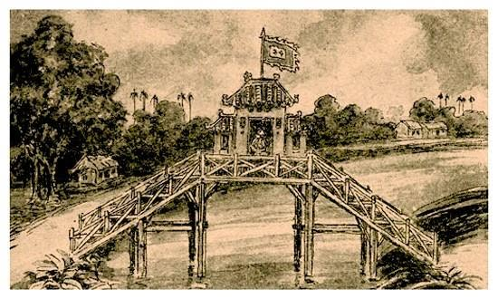
Giai đoạn 1757-1779: Mở rộng địa bàn và chuyển lỵ sở
Năm 1757, sau những biến động chính trị tại Chân Lạp, chúa Nguyễn tiếp nhận thêm các vùng đất ở Tây Nam Bộ và tổ chức lại việc quản lý hành chính. Trong giai đoạn này, dinh Long Hồ mở rộng phạm vi quản lý gắn với các đạo Đông Khẩu, Tân Châu và Châu Đốc.
Cũng trong năm 1757, lỵ sở dinh Long Hồ được chuyển về xứ Tầm Bào (thuộc khu vực thành phố Vĩnh Long trước đây). Sự kiện này góp phần đưa vùng đất Vĩnh Long trở thành một trung tâm hành chính và quân sự quan trọng ở miền Tây Nam Bộ.
Giai đoạn 1779-1808: Từ dinh Hoằng Trấn đến trấn Vĩnh Thanh
Cuối thế kỷ XVIII, vùng đất Long Hồ trải qua nhiều biến động cùng tình hình chính trị ở Đàng Trong. Năm 1779, dinh Long Hồ được đổi tên thành dinh Hoằng Trấn. Đến năm 1780, nơi này tiếp tục được đổi tên thành dinh Vĩnh Trấn.
Sau khi triều Nguyễn được thành lập năm 1802, hệ thống hành chính phía Nam từng bước được củng cố. Năm 1808, dinh Vĩnh Trấn được đổi thành trấn Vĩnh Thanh, thuộc Gia Định thành.
Năm 1832: Trở thành một trong Nam Kỳ lục tỉnh
Năm 1832, vua Minh Mạng tiến hành cải cách hành chính quy mô lớn. Trấn Vĩnh Thanh trước tiên được đổi tên thành trấn Vĩnh Long, sau đó chính thức trở thành tỉnh Vĩnh Long vào tháng 10 cùng năm. Đây là một trong sáu tỉnh Nam Kỳ dưới triều Nguyễn, gồm: Biên Hòa, Gia Định, Định Tường, Vĩnh Long, An Giang và Hà Tiên.
Việc thành lập tỉnh Vĩnh Long đánh dấu bước chuyển từ chế độ quản lý dinh, trấn sang hệ thống tỉnh thống nhất của triều Nguyễn, khẳng định vị thế của Vĩnh Long trong tổ chức hành chính Nam Bộ thế kỷ XIX.
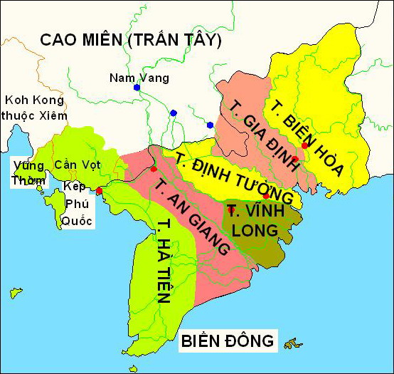
Giai đoạn 1862-1945: Dưới thời chống Pháp
Năm 1862, sau khi triều đình Huế ký Hòa ước Nhâm Tuất, ba tỉnh miền Đông Nam Kỳ được nhượng cho Pháp. Đến năm 1867, thực dân Pháp chiếm ba tỉnh miền Tây, trong đó có Vĩnh Long. Dưới thời Pháp thuộc, hệ thống hành chính Nam Kỳ tiếp tục được tổ chức lại. Các đơn vị hành chính cũ dần được thay thế bằng những hạt tham biện, sau đó là các tỉnh theo mô hình thuộc địa.
Cùng với những thay đổi về hành chính, diện mạo đô thị, giao thông, hoạt động thương mại và đời sống xã hội tại Vĩnh Long cũng có nhiều biến chuyển. Tuy nhiên, vùng đất này vẫn duy trì các truyền thống văn hóa và tinh thần yêu nước của cư dân địa phương.
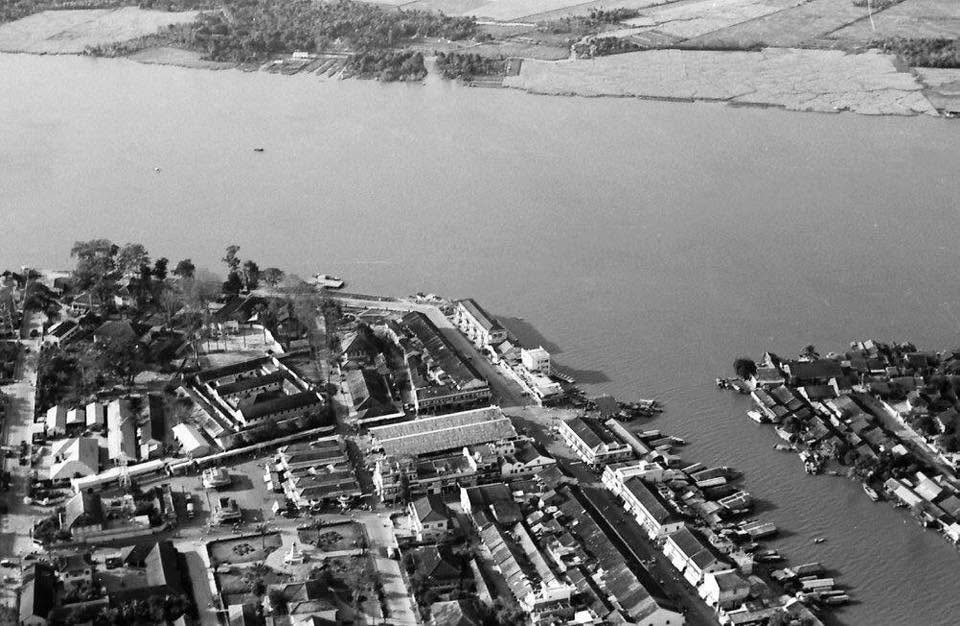
Giai đoạn 1945 đến nay: Những thay đổi hành chính hiện đại
Từ năm 1945, Vĩnh Long tiếp tục trải qua nhiều thay đổi về địa giới và tổ chức hành chính trong các giai đoạn lịch sử. Năm 1976, Vĩnh Long và Vĩnh Bình được hợp nhất thành tỉnh Cửu Long. Tháng 12/1991, Quốc hội khóa VIII đã ra quyết định tách tỉnh Cửu Long thành 2 tỉnh Vĩnh Long và Trà Vinh.
Năm 2025, ba tỉnh Vĩnh Long, Bến Tre và Trà Vinh được hợp nhất thành tỉnh Vĩnh Long mới, mở ra một giai đoạn phát triển với không gian hành chính và kinh tế rộng lớn hơn.
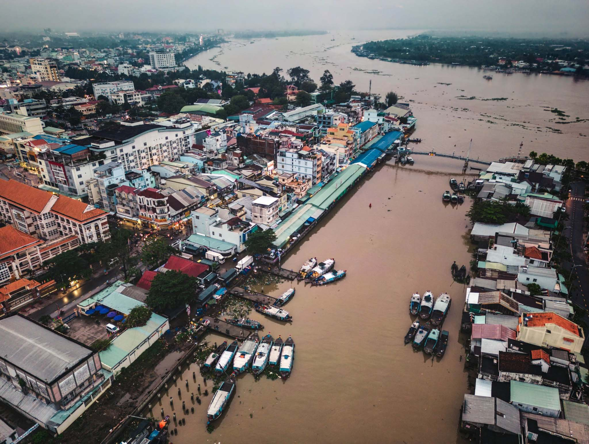
➽MỤC 02Vị trí địa lý & Phạm vi lãnh thổ⌄
Năm 2025, ba tỉnh Vĩnh Long, Bến Tre và Trà Vinh được hợp nhất thành tỉnh Vĩnh Long mới. Tỉnh có diện tích tự nhiên là 6.296,2km², quy mô dân số là 4.194.633 người và 124 đơn vị hành chính cấp xã trực thuộc (gồm 105 xã và 19 phường).
Tỉnh Vĩnh Long có đặc điểm “ba mặt giáp sông, một mặt giáp biển”, phía Bắc và phía Đông giáp tỉnh Đồng Tháp và phía Tây giáp TP.Cần Thơ, phía Nam và Đông Nam giáp Biển Đông.
Sự hiện diện của sông Tiền, sông Hậu cùng hệ thống nhánh sông phụ như Cổ Chiên, Ba Lai, Hàm Luông, Măng Thít… cho thấy tầm quan trọng đặc biệt của tỉnh trong việc liên kết giao thông đường thủy và tương tác kinh tế trong vùng.
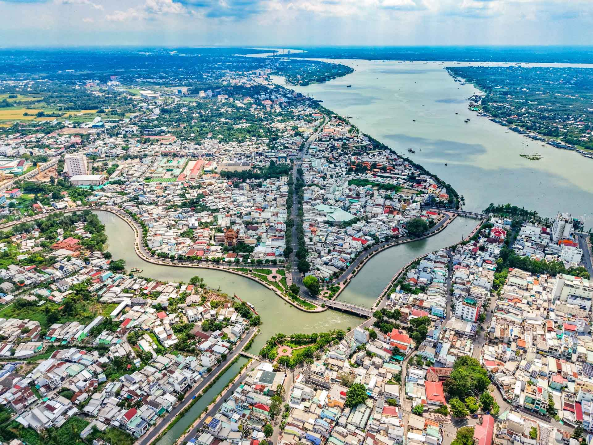
Các giai đoạn thay đổi về phạm vi lãnh thổ
1732: Dinh Long Hồ
Thành lập từ vùng đất phía nam dinh Phiên Trấn, gồm châu Định Viễn, liên quan đến địa bàn Vĩnh Long, một phần Bến Tre và Trà Vinh ngày nay. Lỵ sở đặt tại Cái Bè.
1757: Dinh Long Hồ mở rộng
Phạm vi quản lý mở rộng đến nhiều vùng thuộc Bến Tre, Trà Vinh, Đồng Tháp, An Giang và một số khu vực Tây Nam Bộ. Lỵ sở chuyển về Tầm Bào, tức khu vực Vĩnh Long ngày nay.
1779-1808: Hoằng Trấn, Vĩnh Trấn, Vĩnh Thanh
Địa bàn quản lý thu hẹp so với dinh Long Hồ trước đó do điều chỉnh các vùng đất phía Tây và Tây Nam. Trung tâm hành chính trở lại Tầm Bào từ năm 1780.
1832: Tỉnh Vĩnh Long
Trở thành một trong sáu tỉnh Nam Kỳ. Phạm vi khác với dinh Long Hồ thời kỳ mở rộng và tiếp tục thay đổi trong thế kỷ XIX.
1867-1945: Thời kỳ chống Pháp
Tỉnh Vĩnh Long thuộc Nam Kỳ, địa giới được điều chỉnh qua các đợt tổ chức lại hành chính thuộc địa. Đến năm 1939 gồm bốn quận: Châu Thành, Chợ Lách, Vũng Liêm và Tam Bình.
1976-2024:
Giai đoạn 1976–1991 thuộc tỉnh Cửu Long; từ năm 1992 tái lập tỉnh Vĩnh Long. Trước hợp nhất năm 2025, tỉnh nằm giữa sông Tiền và sông Hậu, không giáp biển.
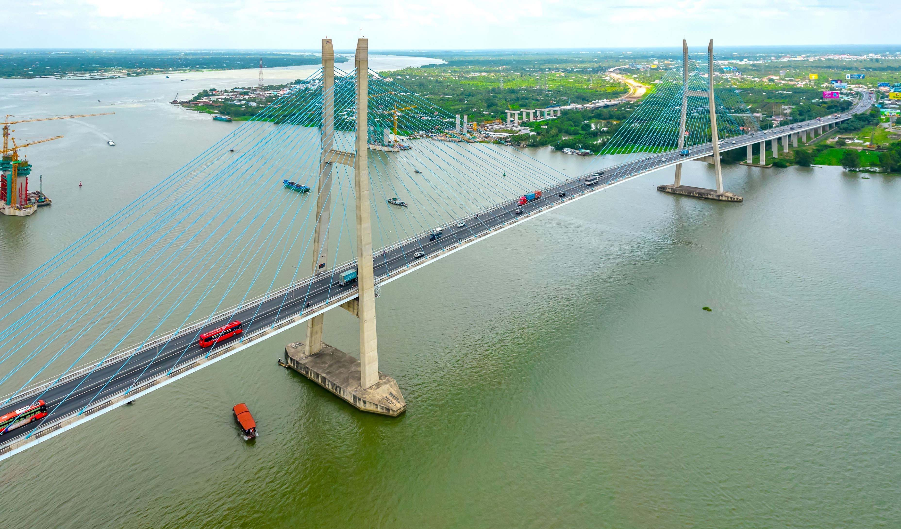
✤MỤC 03Con người & Văn hóa⌄
Vĩnh Long là vùng đất có lịch sử văn hóa lâu đời giữa các cộng đồng Việt, Khmer và Hoa. Qua nhiều thế hệ khai hoang, lập nghiệp, người dân nơi đây đã hình thành những phẩm chất đặc trưng: cần cù, hiếu học, đoàn kết và nghĩa tình.
Nằm giữa hai dòng sông Tiền và sông Hậu, đời sống cư dân Vĩnh Long gắn bó mật thiết với sông nước, vườn cây ăn trái và các nghề truyền thống. Những giá trị văn hóa ấy được thể hiện qua các công trình như đình, chùa; các lễ hội, tín ngưỡng dân gian cùng nghệ thuật đờn ca tài tử và cải lương.
Được mệnh danh là vùng đất học, vùng đất địa linh nhân kiệt, Vĩnh Long còn là quê hương của nhiều danh nhân, nhà giáo, nhà khoa học và những nhân vật có đóng góp quan trọng trong lịch sử dân tộc.
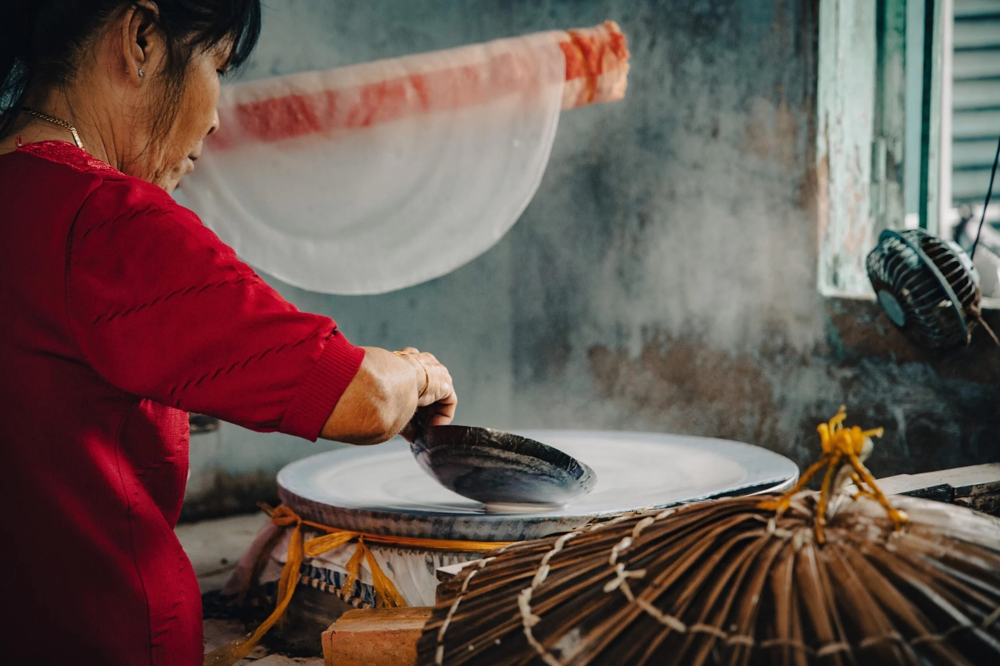
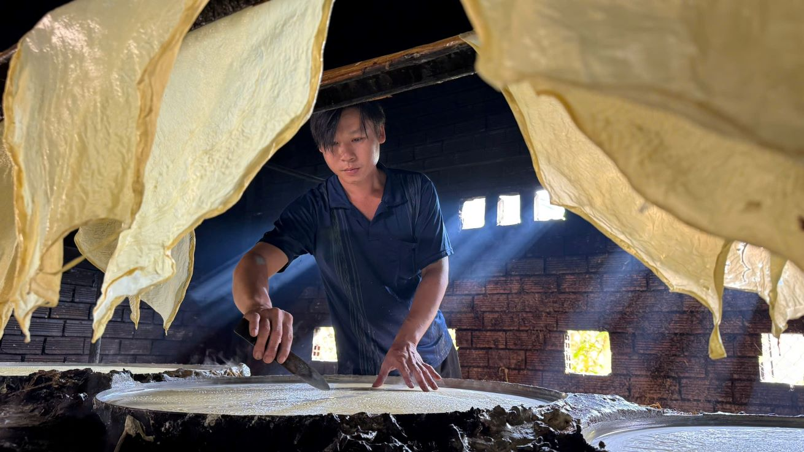
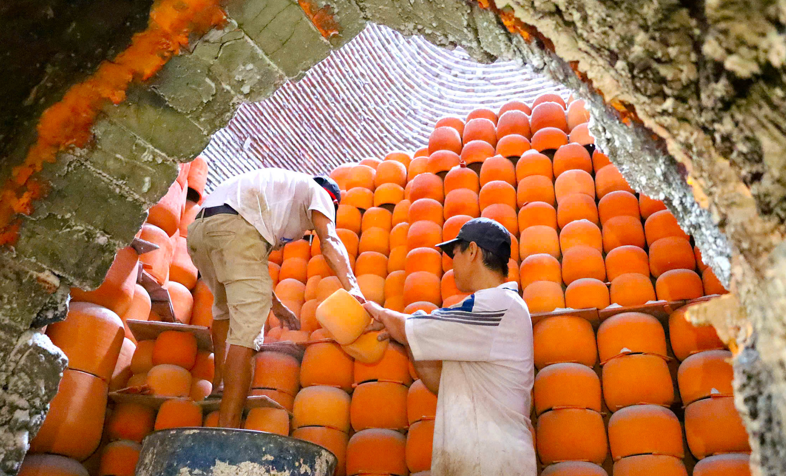
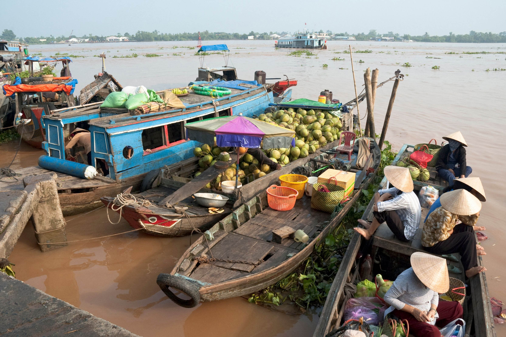
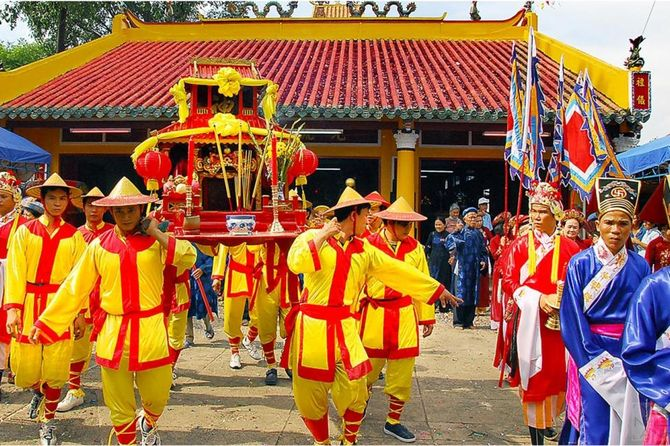
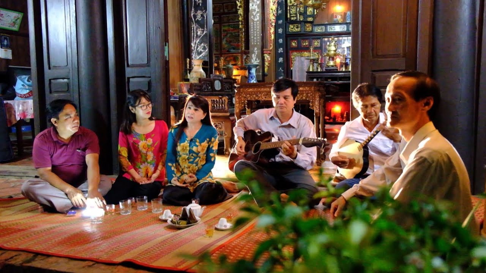
✪MỤC 04Danh nhân & Công cuộc mở cõi⌄
Lịch sử hình thành Vĩnh Long gắn liền với những nhân vật có đóng góp trong quá trình khai phá, thiết lập bộ máy hành chính và bảo vệ vùng đất Tây Nam Bộ.
Năm 1732, chúa Nguyễn Phúc Trú giao Trương Phúc Vĩnh tổ chức thành lập dinh Long Hồ. Đến năm 1757, Nguyễn Cư Trinh và Trương Phước Du đề nghị chuyển lỵ sở về xứ Tầm Bào, tạo tiền đề cho sự hình thành trung tâm Vĩnh Long ngày nay. Tống Phước Hiệp được cử làm Lưu thủ, đảm nhiệm việc quản lý và trấn giữ vùng đất này.
Trong quá trình củng cố vùng Tây Nam Bộ, Thống chế Nguyễn Văn Tồn cũng để lại nhiều dấu ấn về quân sự và bảo vệ địa bàn. Những đóng góp ấy, cùng công sức khai khẩn của nhiều thế hệ cư dân Việt, Khmer và Hoa, đã góp phần xây dựng nên vùng đất Long Hồ - Vĩnh Long giàu truyền thống lịch sử và văn hóa.
Đặc biệt trong giai đoạn chống thực dân Pháp và đế quốc Mỹ, Chủ tịch Hội đồng Bộ trưởng Phạm Hùng, Thủ tướng Chính phủ Võ Văn Kiệt và Giáo sư, Viện sĩ, Anh hùng Lao động Trần Đại Nghĩa… đã có công rất lớn trong công cuộc đấu tranh giải phóng dân tộc cũng như trong quá trình kiến thiết xây dựng đất nước.
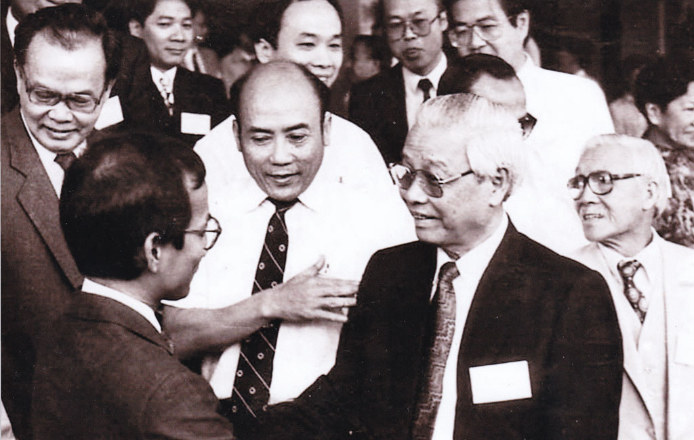
☘MỤC 05Y học cổ truyền, Cây thuốc & Tri thức bản địa⌄
Trên vùng đất Vĩnh Long giàu truyền thống văn hóa, y học cổ truyền từ lâu đã gắn bó mật thiết với công tác chăm sóc sức khỏe cộng đồng, kế thừa kinh nghiệm sử dụng thảo dược và các phương pháp trị liệu dân gian của người Việt.
Qua thời gian, nền Đông y tại địa phương đã từng bước phát triển thành mạng lưới khám chữa bệnh có tổ chức, từ các Hội Đông y cơ sở đến hệ thống bệnh viện chuyên khoa. Những phương pháp như dùng thuốc Nam, châm cứu, xoa bóp và bấm huyệt tiếp tục được ứng dụng rộng rãi, kết hợp hài hòa với y học hiện đại.
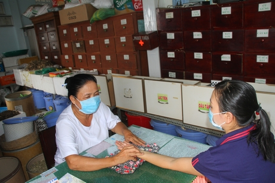
Không chỉ nổi tiếng với những vườn cây trái trù phú, Vĩnh Long còn lưu giữ nguồn tài nguyên thuốc Nam quý giá, kết tinh từ kinh nghiệm phòng và trị bệnh lâu đời của cư dân bản địa.
Nhiều loại dược liệu như sâm bố chính, sâm đất và sâm đại hành đã được ghi nhận trong quá trình sưu tầm và đưa vào trồng bảo tồn. Bên cạnh đó, các loại cây quen thuộc trong đời sống hàng ngày như đinh lăng, gừng, nghệ, sả cũng được tận dụng hiệu quả để chăm sóc sức khỏe cư dân.
Ngày nay, các tổ chức Đông y và cơ sở nghiên cứu trong tỉnh vẫn đang nỗ lực gìn giữ tri thức thuốc Nam, mở rộng các vườn dược liệu và nghiên cứu những phương thuốc cổ truyền, góp phần bảo tồn di sản y học dân tộc.
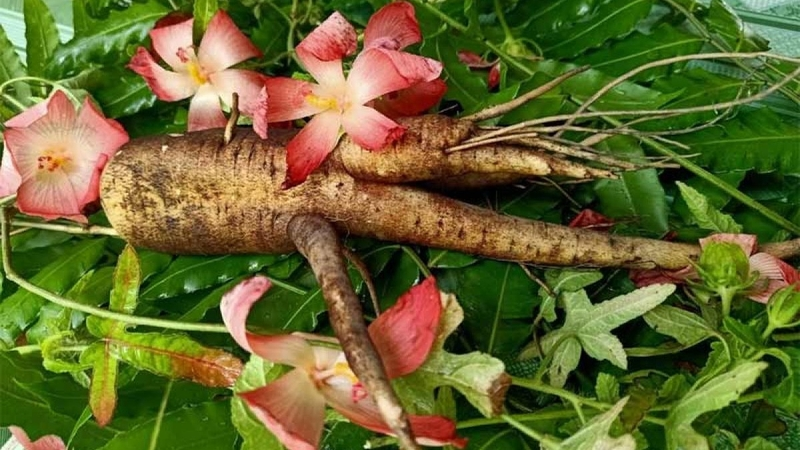
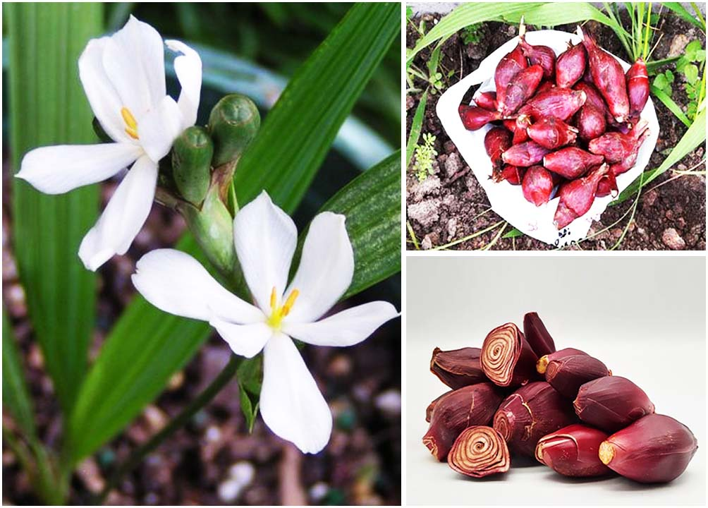
♨MỤC 06Ẩm thực & Đặc sản Vĩnh Long⌄
Nằm giữa hai dòng sông Tiền và sông Hậu, Vĩnh Long sở hữu nền ẩm thực dân dã, phong phú, gắn liền với sản vật sông nước và những vườn cây trĩu quả. Những món ăn như cá cháy Trà Ôn, cá tai tượng chiên xù, cá lóc nướng trui hay bánh xèo thể hiện sự khéo léo của người dân trong việc tận dụng nguồn nguyên liệu thiên nhiên.
Bên cạnh đó, vùng đất Vĩnh Long còn nổi tiếng với bưởi Năm Roi Bình Minh, khoai lang Bình Tân, thanh trà và trái cây miệt vườn. Những làng nghề truyền thống như bánh tráng cù lao Mây, tàu hủ ky Mỹ Hòa tiếp tục lưu giữ hương vị quê hương qua nhiều thế hệ.
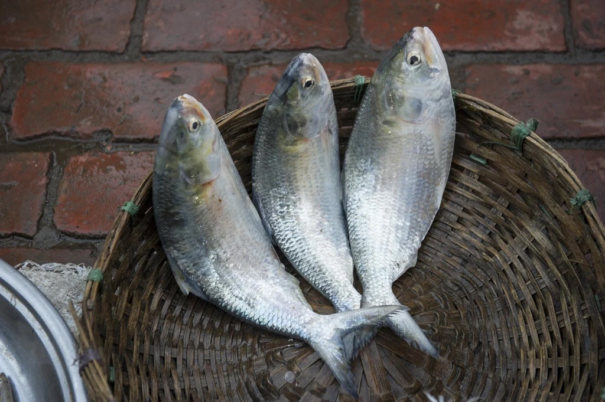
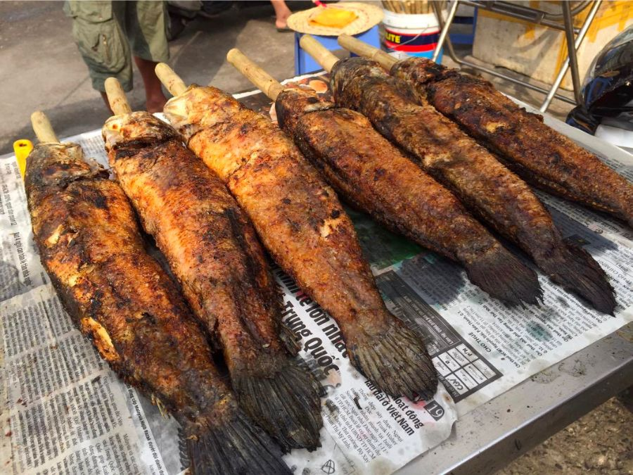
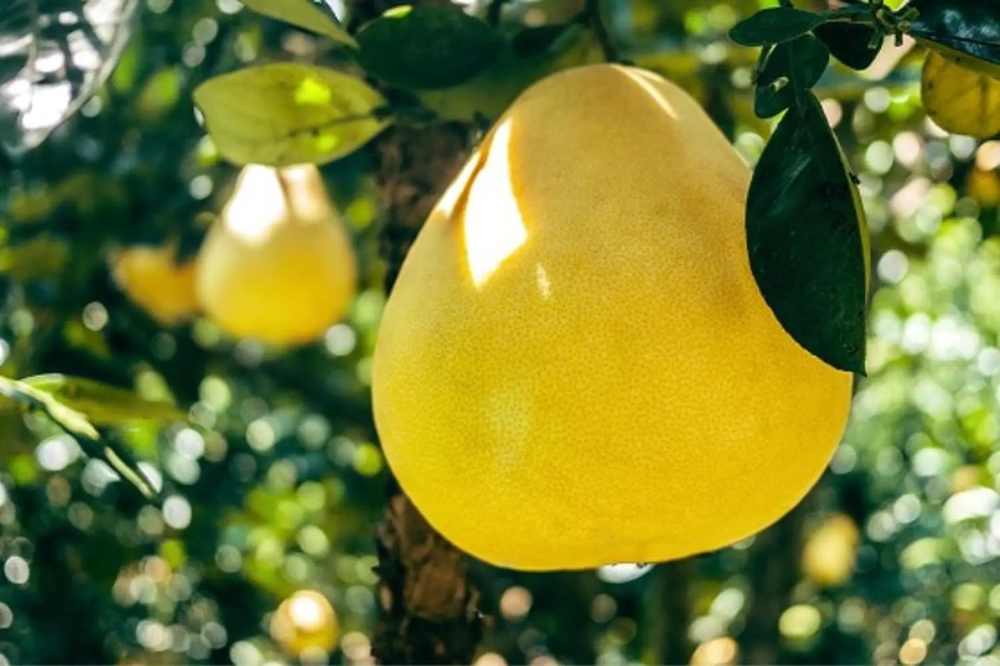
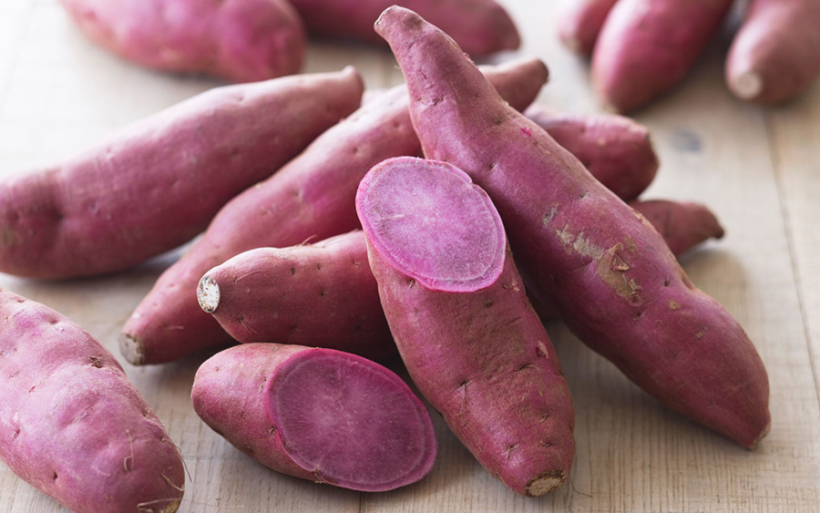
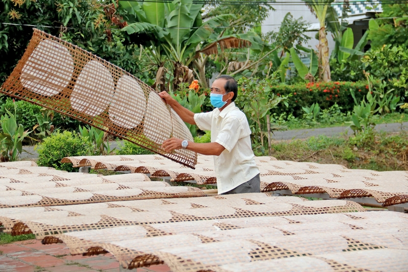
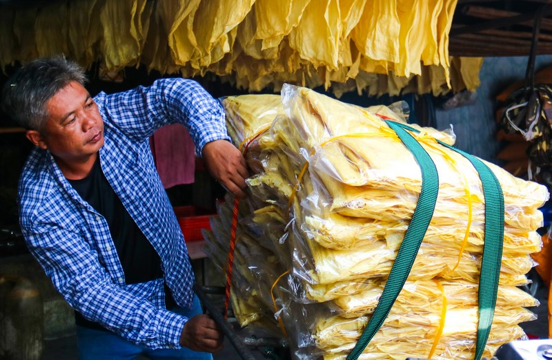
✸MỤC 07Di tích & Thắng cảnh⌄
Vĩnh Long là vùng đất lưu giữ nhiều di tích lịch sử, văn hóa gắn với quá trình khai phá, hình thành và phát triển vùng Long Hồ xưa.
Những công trình như Đình Long Thanh, Chùa Tiên Châu, Văn Thánh Miếu và Công Thần Miếu phản ánh đời sống tín ngưỡng, truyền thống hiếu học và sự phát triển của cộng đồng cư dân qua các thế kỷ XVIII–XIX. Bên cạnh đó, Thất Phủ Miếu thể hiện dấu ấn giao lưu văn hóa Việt – Hoa, trong khi Lăng Ông Nguyễn Văn Tồn và các khu lưu niệm danh nhân góp phần gìn giữ ký ức lịch sử của địa phương.
Không chỉ giàu di sản văn hóa, Vĩnh Long còn sở hữu cảnh quan sông nước đặc trưng với cù lao An Bình, cù lao Mây và những làng nghề gạch gốm Mang Thít. Sự kết hợp giữa di tích cổ kính, miệt vườn trù phú và đời sống dân gian đã tạo nên bản sắc riêng của vùng đất Vĩnh Long.
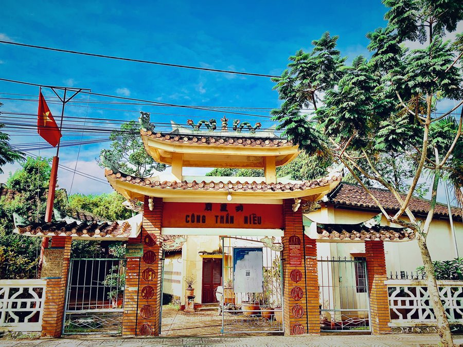
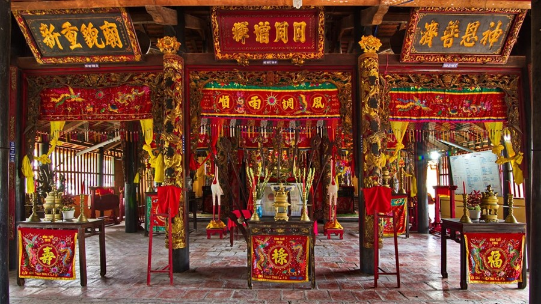
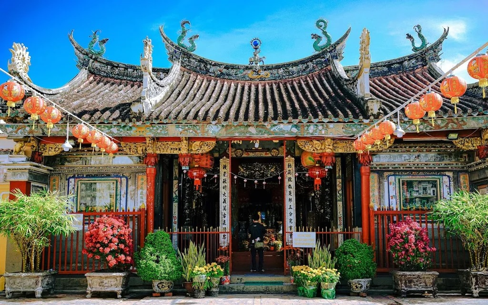
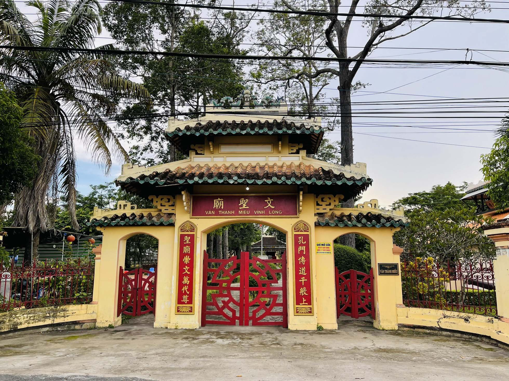
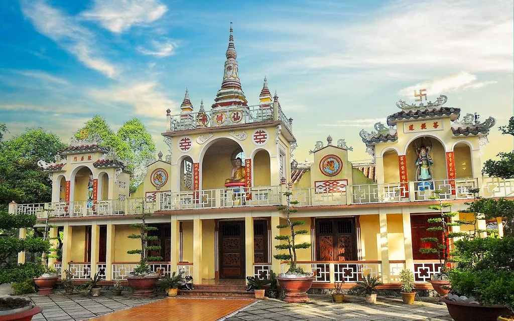
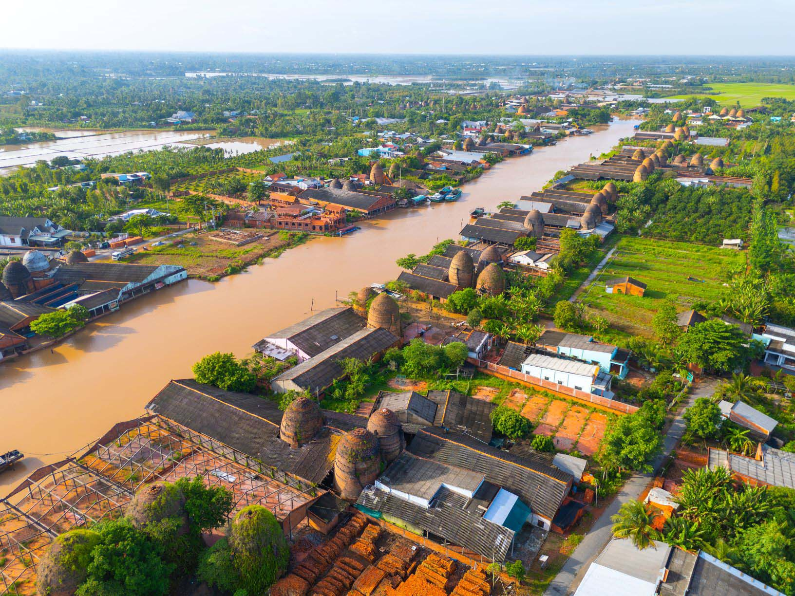